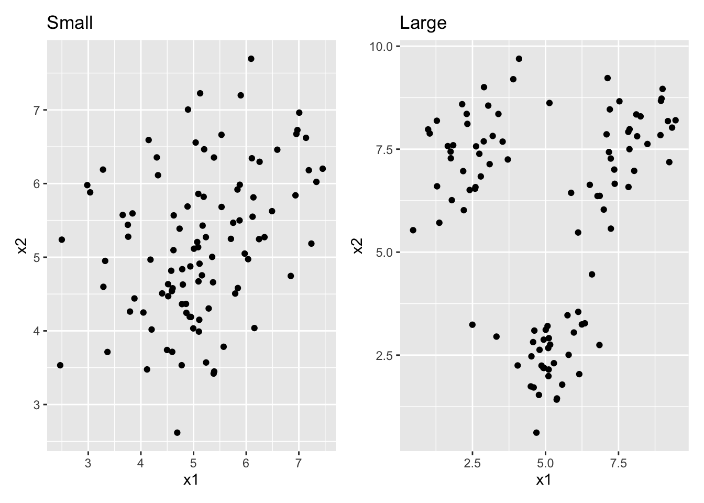
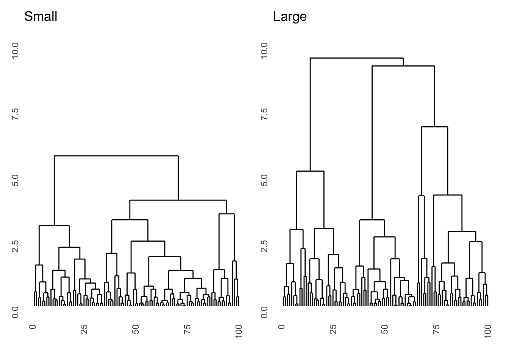
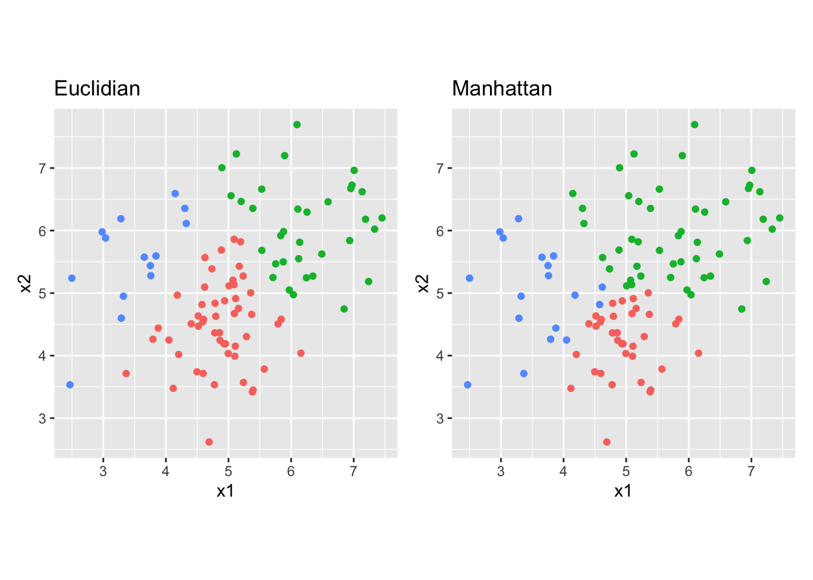
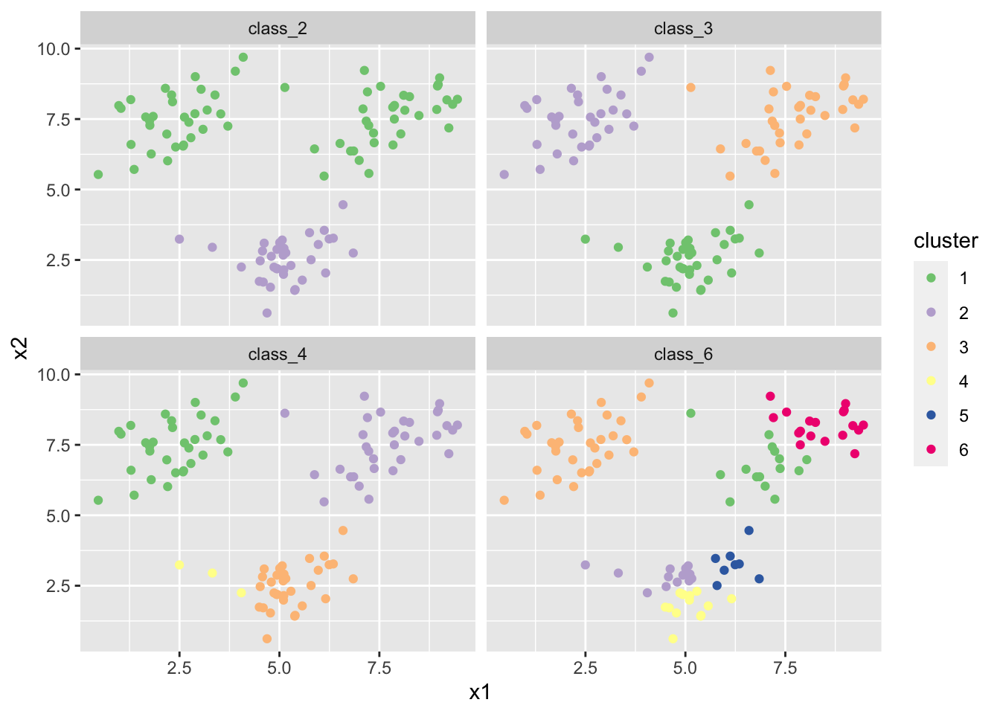
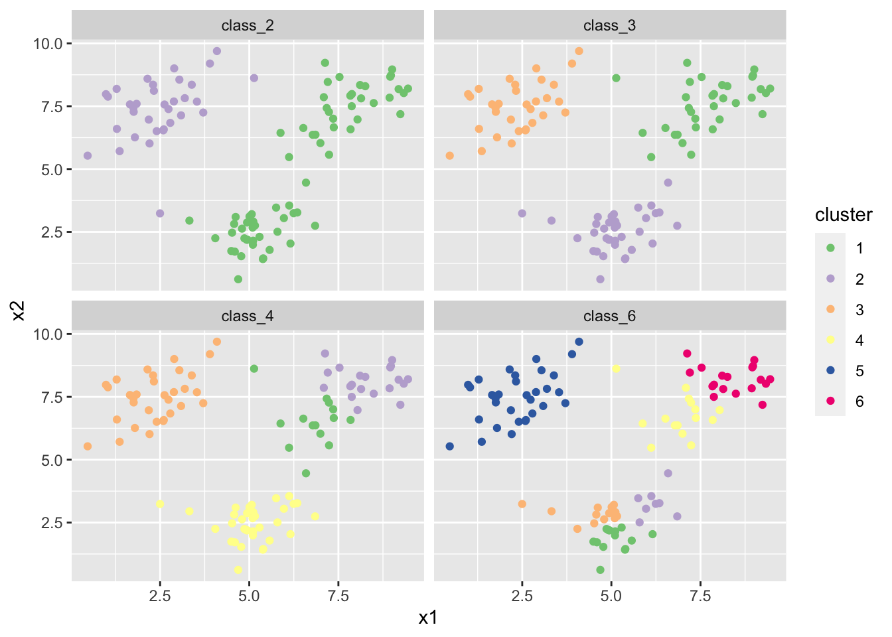

library(MASS) # make sure to load mass before tidyverse to avoid conflicts!
library(tidyverse)
library(patchwork)
library(ggdendro)Hierarchical and k-means clustering
Introduction
We use the following packages:
In this practical, we will apply hierarchical and k-means clustering to two synthetic datasets. The data can be generated by running the code below.
- Try to understand what is happening as you run each line of the code below.
# randomly generate bivariate normal data
set.seed(123)
sigma <- matrix(c(1, .5, .5, 1), 2, 2)
sim_matrix <- mvrnorm(n = 100, mu = c(5, 5), Sigma = sigma)
colnames(sim_matrix) <- c("x1", "x2")
# change to a data frame (tibble) and add a cluster label column
sim_df <-
sim_matrix %>%
as_tibble() %>%
mutate(class = sample(c("A", "B", "C"), size = 100, replace = TRUE))
# Move the clusters to generate separation
sim_df_small <-
sim_df %>%
mutate(x2 = case_when(class == "A" ~ x2 + .5,
class == "B" ~ x2 - .5,
class == "C" ~ x2 + .5),
x1 = case_when(class == "A" ~ x1 - .5,
class == "B" ~ x1 - 0,
class == "C" ~ x1 + .5))
sim_df_large <-
sim_df %>%
mutate(x2 = case_when(class == "A" ~ x2 + 2.5,
class == "B" ~ x2 - 2.5,
class == "C" ~ x2 + 2.5),
x1 = case_when(class == "A" ~ x1 - 2.5,
class == "B" ~ x1 - 0,
class == "C" ~ x1 + 2.5))- Prepare two unsupervised datasets by removing the class feature.
df_s <- sim_df_small %>% select(-class)
df_l <- sim_df_large %>% select(-class)- For each of these datasets, create a scatterplot. Combine the two plots into a single frame (look up the “patchwork” package to see how to do this!) What is the difference between the two datasets?
# patchwork defines the "+" operator to combine entire ggplots!
df_s %>% ggplot(aes(x = x1, y = x2)) + geom_point() + ggtitle("Small") +
df_l %>% ggplot(aes(x = x1, y = x2)) + geom_point() + ggtitle("Large")
# df_s has a lot of class overlap, df_l has very little overlapHierarchical clustering
- Run a hierarchical clustering on these datasets and display the result as dendrograms. Use euclidian distances and the complete agglomeration method. Make sure the two plots have the same y-scale. What is the difference between the dendrograms? (Hint: functions you’ll need are
hclust,ggdendrogram, andylim)
dist_s <- dist(df_s, method = "euclidian")
dist_l <- dist(df_l, method = "euclidian")
res_s <- hclust(dist_s, method = "complete")
res_l <- hclust(dist_l, method = "complete")
ggdendrogram(res_s, labels = FALSE) + ggtitle("Small") + ylim(0, 10) +
ggdendrogram(res_l, labels = FALSE) + ggtitle("Large") + ylim(0, 10)
# the dataset with large differences segments into 3 classes much higher up.
# Interestingly, the microstructure (lower splits) is almost exactly the same
# because within the three clusters there is no difference between the datasets- For the dataset with small differences, also run a complete agglomeration hierarchical cluster with manhattan distance.
dist_s2 <- dist(df_s, method = "manhattan")
res_s2 <- hclust(dist_s2, method = "complete")- Use the
cutree()function to obtain the cluster assignments for three clusters and compare the cluster assignments to the 3-cluster euclidian solution. Do this comparison by creating two scatter plots with cluster assignment mapped to the colour aesthetic. Which difference do you see?
clus_1 <- as_factor(cutree(res_s, 3))
clus_2 <- as_factor(cutree(res_s2, 3))
p1 <- df_s %>%
ggplot(aes(x = x1, y = x2, colour = clus_1)) +
geom_point() +
ggtitle("Euclidian") +
theme(legend.position = "n") +
coord_fixed()
p2 <- df_s %>%
ggplot(aes(x = x1, y = x2, colour = clus_2)) +
geom_point() +
ggtitle("Manhattan") +
theme(legend.position = "n") +
coord_fixed()
p1 + p2
# The manhattan distance clustering prefers more rectangular classes, whereas
# the euclidian distance clustering prefers circular classes. The difference is
# most prominent in the very center of the plot and for the top right clusterK-means clustering
- Create k-means clusterings with 2, 3, 4, and 6 classes on the large difference data. Again, create coloured scatter plots for these clusterings.
# I set the seed for reproducibility
set.seed(45)
# we can do it in a single pipeline and with faceting
# (of course there are many ways to do this, though)
df_l %>%
mutate(
class_2 = as_factor(kmeans(df_l, 2)$cluster),
class_3 = as_factor(kmeans(df_l, 3)$cluster),
class_4 = as_factor(kmeans(df_l, 4)$cluster),
class_6 = as_factor(kmeans(df_l, 6)$cluster)
) %>%
pivot_longer(cols = c(class_2, class_3, class_4, class_6),
names_to = "class_num", values_to = "cluster") %>%
ggplot(aes(x = x1, y = x2, colour = cluster)) +
geom_point() +
scale_colour_brewer(type = "qual") + # use easy to distinguish scale
facet_wrap(~class_num)
- Do the same thing again a few times. Do you see the same results every time? where do you see differences?
# I set the seed for reproducibility
set.seed(46)
df_l %>%
mutate(
class_2 = as_factor(kmeans(df_l, 2)$cluster),
class_3 = as_factor(kmeans(df_l, 3)$cluster),
class_4 = as_factor(kmeans(df_l, 4)$cluster),
class_6 = as_factor(kmeans(df_l, 6)$cluster)
) %>%
pivot_longer(cols = c(class_2, class_3, class_4, class_6),
names_to = "class_num", values_to = "cluster") %>%
ggplot(aes(x = x1, y = x2, colour = cluster)) +
geom_point() +
scale_colour_brewer(type = "qual") + # use easy to distinguish scale
facet_wrap(~class_num)
# there is label switching in all plots. There is a different result altogether
# in the class_4 solution in my case.- Find a way online to perform bootstrap stability assessment for the 3 and 6-cluster solutions.
# I decided to use the function clusterboot from the fpc package
# NB: this package needs to be installed first!
# install.packages("fpc")
library(fpc)
# you can read the documentation ?clusterboot to figure out how to use this
# function. This can take a while but is something you will need to do a lot in
# the real world!
boot_3 <- clusterboot(df_l, B = 1000, clustermethod = kmeansCBI, k = 3,
count = FALSE)
boot_6 <- clusterboot(df_l, B = 1000, clustermethod = kmeansCBI, k = 6,
count = FALSE)
# the average stability is much lower for 6 means than for 3 means:
boot_3$bootmean[1] 0.9844165 0.9730219 0.9739694boot_6$bootmean[1] 0.7844248 0.5383414 0.7593547 0.7230086 0.6897734 0.7091287